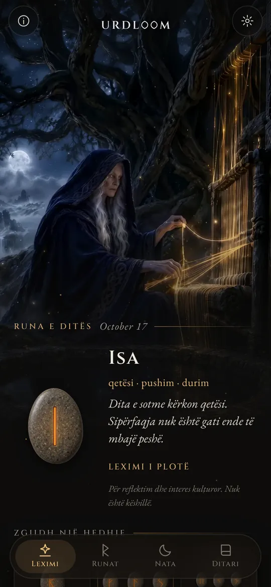
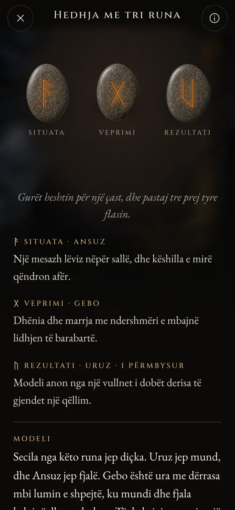
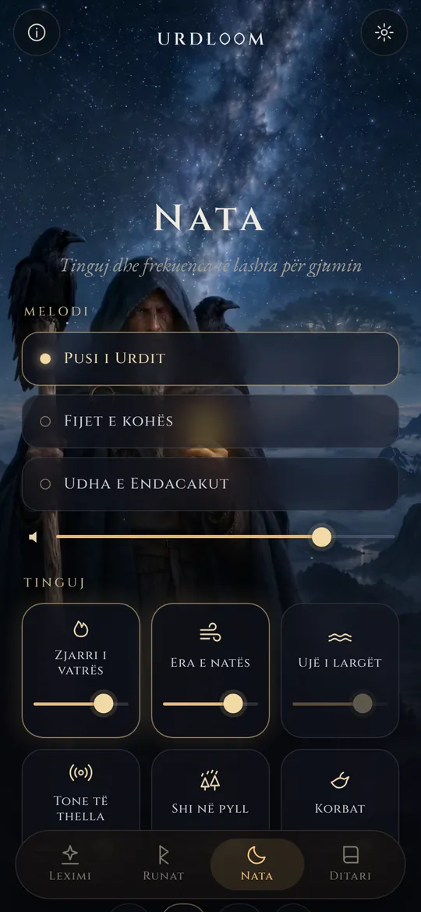
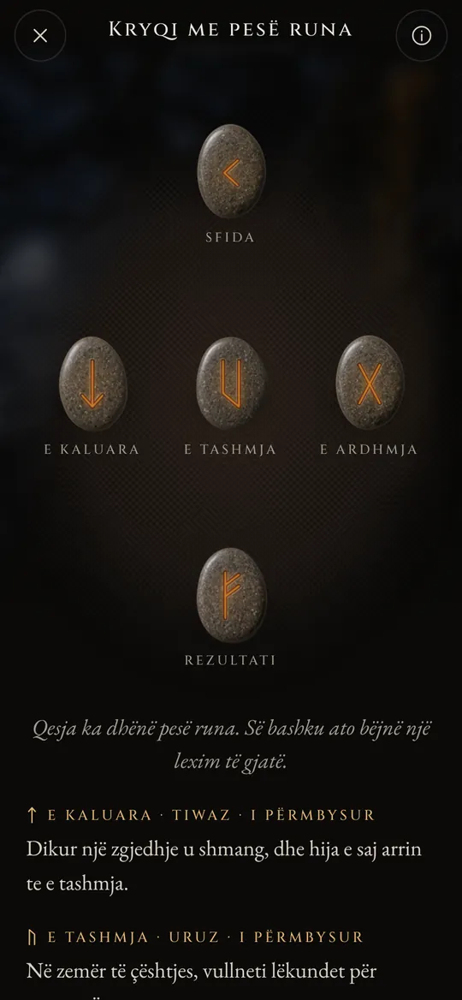

Tri gra rrinë pranë një pusi
Në poemat e vjetra nordike, tri Norna rrinë pranë një pusi nën Yggdrasil-in, pemën e botës. Ato ujisin rrënjët e saj, gdhendin shenja në dru dhe u caktojnë jetën të gjithë atyre që lindin. Më e vjetra quhet Urd. Emri i saj do të thotë „ajo që ka ndodhur”, dhe pusi mban emrin e saj.
Urdloom e merr emrin prej saj dhe prej tezgjahut (anglisht loom) ku thuhej se endej fati. Aplikacioni e ruan këtë frymë: një qeskë me gurë në dorë, një pëlhurë në dysheme dhe lexime të shkruara me zërin e sagave, jo me zërin e një horoskopi.

Prej andej vijnë vajza që dinë shumë, tri, nga liqeni nën pemë.Völuspá, strofa 20
Mbaj, tund, lësho
Mbaje qeskën dhe gurët kërcasin në dorën tënde. Lëshoje dhe ata fluturojnë mbi pëlhurë, rrokullisen, qetësohen dhe kthehen një nga një. Leximi shfaqet poshtë tyre.

Një runë
Një gur i vetëm për ditën që të pret, ose për një pyetje që merr përgjigje me po ose jo. Prek dhe ai hidhet.


Hedhja me tri runa
Situata, veprimi, rezultati. Lexohen nga e majta në të djathtë si një sagë e shkurtër, pastaj së bashku: një fill përmbyllës tregon si flasin të tria me njëra-tjetrën.

Kryqi me pesë runa
E kaluara, e tashmja dhe e ardhmja në mes, sfida sipër dhe rezultati poshtë, ndërsa ti qëndron në zemër të kryqit.




Çdo lexim është shkruar me dorë: njëzet e katër runat, çdo çift dhe të gjitha 2.024 kombinimet me tri, në secilën nga njëzet e dy gjuhët. Asgjë nuk krijohet automatikisht ndërsa pret.

Njëzet e katër runat
Elder Futhark është alfabeti runik më i vjetër, i gdhendur afërsisht nga shekulli II deri në shekullin VIII. Njëzet e katër shenjat e tij ndahen në tri familje me nga tetë, të quajtura ætt, dhe secila mban emrin e zotit, runa e të cilit qëndron në krye të saj. Prek një gur për ta lexuar.
Ætt-i i Freyr-it
Ætt-i i Hagal-it
Ætt-i i Tyr-it
Emrat e runave ruhen në formën e tyre të vjetër në çdo gjuhë. Janë emrat e vetë shenjave, të rindërtuar nga studiuesit prej poemave të runave dhe alfabeteve më të vjetra.
Një histori e shkurtër e runave
Runat janë para së gjithash shkronja. Popujt gjermanikë i gdhendën në dru, kockë, metal dhe gur për rreth një mijë e pesëqind vjet. Ja si arritën deri te ne shenjat dhe zakoni i vjetër i hedhjes së shortit.

Shorte mbi një pëlhurë të bardhë
Historiani romak Taciti shkruan se popujt gjermanikë presin një degë peme frutore në copëza, i shënojnë me shenja dhe i shpërndajnë mbi një pëlhurë të bardhë. Një prift ose i zoti i shtëpisë ngre tri prej tyre, një nga një, dhe i lexon. Ai nuk thotë se shenjat ishin runa, por gjesti është pikërisht ai që ruan Urdloom.
Mbishkrimet e para
Një krehër kocke i gjetur në kënetën e Vimose në Danimarkë mban një nga mbishkrimet runike më të vjetra që njihen, një fjalë të vetme: harja. Maja shtizash, karfica dhe hajmali nga po ato shekuj tregojnë se shkrimi ishte përhapur tashmë në gjithë veriun.
E gjithë radha mbi një gur
Mbi gurin e Kylver në Gotland dikush gdhendi të njëzet e katër shenjat sipas radhës. Është futhark-u i plotë më i vjetër që kemi. Radha e merr emrin nga gjashtë shkronjat e para: f, u, th, a, r, k.
Brirët e artë
Njëri nga dy brirët e artë të Gallehus në Danimarkë mban një varg aliterativ: „Unë, Hlewagastiz, biri i Holt-it, e bëra bririn.” Është një nga vargjet më të hershme të poezisë në çfarëdo gjuhe gjermanike.
Gjashtëmbëdhjetë shenja për epokën e vikingëve
Në Skandinavi alfabeti shkurtohet në gjashtëmbëdhjetë shenja: Futhark-u i Ri. Me shkronjat e tij ngrihen mijëra gurë përkujtimorë, mes tyre gurët e mëdhenj të Jelling në Danimarkë.
Poemat hidhen në letër
Shkruesit islandezë hedhin në letër poemat e Edda-s. Në Völuspá Nornat rrinë pranë pusit të Urd-it; në Hávamál Odin-i rri varur nëntë net në pemën e rrahur nga erërat dhe i merr runat me një britmë.
Një varg për çdo runë
Poemat e runave nga Norvegjia dhe Islanda, bashkë me një më të vjetër anglosaksone, i japin çdo rune një varg të shkurtër: bagëtia ngjall grindje mes të afërmve, breshëri është kokrra më e ftohtë, akulli është shumë i rrëshqitshëm. Shumë nga ato që dihen për kuptimet e runave vijnë prej këtyre vargjeve.
Lexim sërish
Përdorimi i runave për reflektim është një ringjallje moderne, e ngritur mbi ato poema dhe mbi pamjet e Edda-ve. Urdloom qëndron hapur në këtë traditë: nuk pretendon të jetë një orakull i lashtë, vetëm i lexon me kujdes shenjat e vjetra.

Tinguj dhe frekuenca të lashta për gjumin
Kur dita mbaron, endacaku del nën yje. Zgjidh një melodi, shtro tinguj mbi të dhe vendos një kohëmatës. Tingujt vazhdojnë të luajnë me ekranin të fikur dhe shuhen vetë.
Tri melodi: „Pusi i Urdit”, „Fijet e kohës” dhe „Udha e Endacakut”, të ngritura mbi këngë gryke, daulle me kornizë dhe tagelharpa me hark.
Gjashtë shtresa për t’i përzier, secila me nivelin e vet: zjarri i vatrës, era e natës, ujë i largët, tone të thella, shi në pyll dhe korbat.
Çdo tingull u krijua për Urdloom. Asgjë nuk luhet nga interneti.
Gjëra të vogla që kanë rëndësi
- Një runë çdo mëngjes
- Një gur pret me fytyrë poshtë në ekranin e parë. Nëse dëshiron, një shënim i shkurtër të tregon çdo mëngjes cila runë u tërhoq për ty.
- Një ditar
- Ruaji leximet që të flasin, bashkë me pyetjen që bëre.
- Lexime që mund t’i ndash
- Dërgo një lexim si figurë: gurët ashtu siç ranë dhe fjalët poshtë tyre.
- Njëzet e dy gjuhë
- Secila e shkruar dhe e rishikuar nga njerëz që e lexojnë, me shkronja dhe madhësi që mund t’i ndryshosh.
Çfarë ndodh këtu, mbetet këtu
Urdloom punon pa internet. Nuk ka llogari, regjistrim apo reklama dhe nuk përmban asnjë lloj analitike apo gjurmimi. Pyetjet, leximet dhe ditari yt mbeten në telefonin tënd.
PrivatësiaPyetje
A e parashikon Urdloom të ardhmen?
Jo. Leximet janë për reflektim dhe interes kulturor. Ato tregojnë një drejtim, siç bënin runat e vjetra, dhe kuptimi merr formë në jetën tënde. Asgjë në aplikacion nuk është këshillë mjekësore, financiare, ligjore apo ndonjë këshillë tjetër profesionale.
Pse gjuha tingëllon e vjetër?
Runat vijnë nga një botë poemash, sagash dhe gjëegjëzash. Leximet i shkruam me qëllim me atë zë dhe i mbajtëm sa më pranë traditës së runave, në çdo gjuhë.
A më duhet lidhje interneti?
Jo. Gjithçka, nga leximet te tingujt e natës, është brenda aplikacionit.
Cilat gjuhë ka?
Anglisht, turqisht, gjermanisht, frëngjisht, spanjisht, italisht, portugalisht, rusisht, ukrainisht, polonisht, holandisht, suedisht, norvegjisht, finlandisht, greqisht, arabisht, hindisht, indonezisht, japonisht, koreanisht, kinezisht dhe shqip.
Na shkruaj
Pyetje, një fjalë që tingëllon gabim në gjuhën tënde, apo një lexim që të mbeti në mendje: ne e lexojmë çdo mesazh.
support@urdloom.com